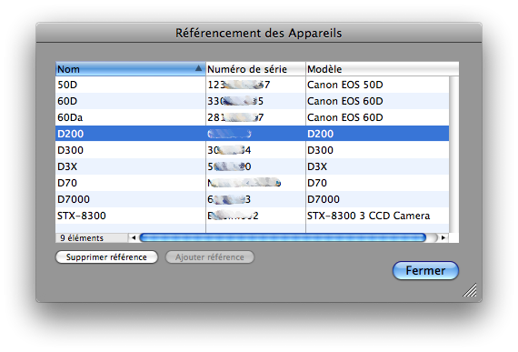

Référencement des appareils photo numériques
Pour référencer les APNs dans Lunar Eclipse Maestro vous devez ouvrir le dialogue Référencement des Appareils.
-
Dans le menu Configuration sélectionnez Référencement des appareils…
-
Dès qu’un APN est connecté et allumé sur le bus USB ou Firewire, il apparaîtra dans le dialogue de Configuration Matérielle une fois qu’il répond. Une fois que vous aurez renseigné son nom et validé le dialogue, le référencement de cet appareil sera automatiquement effectué.

-
Après avoir sélectionné un appareil, cliquez sur le bouton Supprimer référence pour retirer le lien entre le numéro de série et le nom donné à l’appareil.
-
Quand un appareil avec un même numéro de série est déjà enregistré, le nom donné à l’appareil sera remplacé par le nouveau.
|
Le référencement des appareils est utilisé pour les reconnaître automatiquement lors d’une prochaine utilisation. Cela vous fera gagner du temps.